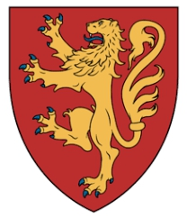

1st High Steward of Scotland, Baron. Blev ca 72 år.
omkring 1105 Oswestry Castle, England. [1]
1177 Paisley Abbey, Scotland. [2]
Walter Fitzalan, död 1177, var den förste innehavaren av den ärftliga titeln High Steward of Scotland (från omkring 1150). Han tillhörde en familj som kommit till England med Vilhelm Erövraren, och blev stamfader till huset Stuart.
Walter FitzAlan ( ca 1106 – 1177) var en engelsk baron från 1100-talet som blev en skotsk magnat och steward av Skottland . [not 1] Han var en yngre son till Alan fitz Flaad och Avelina de Hesdin. Omkring 1136 trädde Walter i tjänst hos David I, kung av Skottland . Han blev kungens dapifer eller förvaltare i omkring 1150, och tjänstgjorde som sådan för tre på varandra följande skotska kungar: David, Malcolm IV och William I . Med tiden blev förvaltarskapet ärftligt innehat av Walters ättlingar.
Walter började sin karriär som en mindre engelsk baron. När han anlände till Skottland, fick han emellertid ett betydande anslag av land från sina skotska suveräner. Dessa inklusive de västra provinsiella lordshipsna av: Mearns, Strathgryfe , Renfrew och North Kyle . Den caput av Walter innehav är osäkert, men det finns anledning att misstänka att det var antingen Dundonald slott eller Renfrew slott . Walter var en välgörare av flera religiösa hus och var grundaren av Paisley Priory .
Det finns anledning att misstänka att Walter deltog i belägringen av Lissabon mot morerna 1147. Han hjälpte troligen Malcolm i serien av skotska invasioner av Galloway 1160, vilket resulterade i att Fergus, Lord of Galloway föll . Faktum är att Walter och de andra kolonialherrarna som bosatte sig i västra Skottland var förmodligen avsedda att skydda det skotska riket från yttre hot som ligger i regioner som Galloway och öarna . År 1164 invaderade Somairle mac Gilla Brigte, kung av öarna Skottland och besegrades nära Renfrew. Det är möjligt att befälhavaren för de lokala skotska styrkorna var Walter själv.
Walter var gift med Eschina de Londres, en uppenbar medlem av familjen Londres/London. Det finns anledning att misstänka att hon också härstammade matrilineärt från en familj som är infödd i södra Skottland. Om det är korrekt kan detta förklara varför Walter beviljades Mows land. Alternativt är det möjligt att Eschinas rättigheter till Mow bara härrörde från hennes äktenskap med Walter. Eschina och Walter var föräldrar till Alan , Walters efterträdare. Paret kan också ha varit föräldrar till en Christina, en kvinna som gifte sig in i familjerna Brus och Dunbar . Walter var en förfader till familjen Stewart , från vilken härstammade den kungliga Stewart/Stuart-dynastin . Han dog 1177.
Innehåll
Anor och ankomst till Skottland
Karta över Västeuropa
Platser relaterade till Walters liv och tider
Walter var en medlem av familjen Fitz Alan . [10] Han föddes omkring 1110. [11] Walter var en son till Alan fitz Flaald (död 1121 × ) och Avelina de Hesdin. [12] [not 2] Alan och Avelina hade tre söner: Jordan, William och Walter. [22] [not 3]
Walters far var en bretonsk riddare som beviljades mark i Shropshire av Henry I, kung av England . Dessförinnan hade Alan agerat som förvaltare åt biskoparna av Dol i Bretagne . [24] Walter var en mindre engelsk jordägare. Han höll North Stoke , norr om Arundel , i form av ett bidrag från sin bror, William. [25] Det finns anledning att misstänka att Walter också höll Manhood , söder om Chichester . [26] Han höll också mark vid "Conelon" eller "Couten", en plats som möjligen syftar på Coundi Shropshire. [27]
Walter verkar ha anlänt till Skottland omkring 1136, under David I, kung av Skottland . [28] Efter Henrys död 1135, ställde sig Fitz Alans uppenbarligen på Davids sida i hans stöd för de omtvistade engelska kungliga anspråken av Henrys dotter, Matilda . [29] Visst, både William och Walter bevittnade Matildas handlingar 1141. [30] Under alla omständigheter kan datumet för Walters introduktion i Skottland markeras av den ursprungliga delen av den så kallade "grundstadgan" för Melrose Abbey , som registrerar Walter som ett vittne. [31]
Se bildtexten
David I, kung av Skottland som han avbildas i en kunglig stadga från mitten av 1100-talet
Walter tjänstgjorde som Davids dapifer eller senescallus (steward). [32] Han tjänade som i denna kapacitet för tre på varandra följande skotska kungar: David, Malcolm IV och William I . [33] [not 4] Walter vittnas alltmer av kungliga stadgar från omkring 1150, [36] och det är möjligt att det var ungefär vid denna tidpunkt som David beviljade honom förvaltarskapet som skulle innehas ärftligt. [37] Som kungens förvaltare skulle Walter ha varit ansvarig för den dagliga driften av kungens hushåll. [38] Medan kammarherrenansvarade för kungens sovkupéer, förvaltaren övervakade kungens sal. [39] Det är möjligt att David försökte ersätta det gaeliska kontoret rannaire ("matavdelare") med stewardens. [40] Detta ämbete verkar verkligen ha varit en föregångare till förvaltarskapet. [41] [not 5] Walters förfäder var förvaltare åt de bretonska herrarna i Dol. [46] Faktum är att hans äldre bror, Jordan, ärvde detta förvaltarskap från sin far, [47] och innehade detta ämbete vid tiden för Walters egen etablering i Skottland. Som sådan är det troligt att Walter hade en viss erfarenhet av yrket. [40]
Karta över Storbritannien
Sekulära herrskap från 1100-talet på Skottlands västra kust. [48] Walters domän inkluderade de avbildade regionerna Strathgryfe , Renfrew , Mearns och North Kyle . Clydesdale och South Kyle var kungliga lordships, medan Cunningham var en Morville lordship. [49]
Walter levde under en period i historien när skotska monarker försökte locka män till sitt rike genom att lova dem gåvor av land. Till sådana kungar var kunglig auktoritet beroende av deras förmåga att ge bort territorier i rikets periferi. [50] Även om de skotska monarkerna från 1200-talet inte skapade några nya jarldömen för de inkommande anglo-normandiska magnaten, gav de dem provinsherrskap. De viktigaste av dessa koloniala anläggningar från mitten av århundradet var: Annandale för Robert de Brus ; Upper Eskdale och Ewesdale för Robert Avenel ; Lauderdale och Cunningham förHugh de Morville ; Liddesdale för Ranulf de Sules ; och Mearns, Strathgryfe , Renfrew och North Kyle för Walter själv. [51] [not 6] Som ett resultat av deras ämbetstid i höga ämbeten och deras dominerande regionala inflytande, var dessa provinsherrar lika med de infödda skotska jarlarna i alla utom rang. [56]
Svartvitt fotografi av en medeltida charter
Walters charter av Birkenside , Legerwood och Mow från Malcolm IV, kung av Skottland [57]
År 1161×1162 bekräftade Malcolm Walters förvaltarskap och bekräftade Davids anslag av Renfrew, Paisley , Pollock , "Talahret", Cathcart , Dripps, Mearns, Eaglesham , Lochwinnoch och Innerwick . Han beviljade också Walter West Partick , Inchinnan , Stenton , Hassenden, Legerwood och Birkenside , samt en toft med tjugo tunnland i varje burgh och demesne i riket. För detta anslag var Walter skyldig sin suverän tjänsten av fem riddare . [58]Beviljandet av logi i varje viktig kunglig bosättning skulle endast ha anförtrotts personer som stod kungen särskilt nära och till dem som förväntades resa med honom. [59] Den imponerande listan över tjugonio framstående män som intygade denna transaktion verkar vara bevis på att förfarandet ägde rum i en offentlig miljö inför kungahovet. [60]
Vid någon tidpunkt under sin karriär fick Walter North Kyle [61] från antingen David eller Malcolm. [62] [not 7] Också 1161×1162 – kanske på samma datum som Malcolms ovannämnda stadga till Walter [64] – beviljade kungen Walter Mows land för att tjäna en riddare. [65] Det finns anledning att misstänka att Davids ursprungliga upplåtelse av mark till Walter ägde rum 1136. Säkerligen 1139×1146 bevittnade Walter en stadga av David till katedralen i Glasgow där kungen investerade katedralen med tillgångar från Carrick , Cunningham, Strathgryfe och Kyle . [66] [not 8]År 1165 uppges Walter ha haft landområden värda två riddararvoden i Shropshire. [68] Som sådan var den stora majoriteten av hans innehav lokaliserade norr om den anglo-skotska gränsen . [69]
Kyrkliga handlingar
Foto av Wenlock Priory
Ruinerande Wenlock Priory . Walter verkar ha varit en anhängare av detta engelska Cluniac-kloster .
Walter var en välgörare av Melrose Abbey, och beviljade detta religiösa hus landet Mauchline i Ayrshire . [70] [not 9] Han beviljade också sina landområden i Dunfermline [72] och Inverkeithing till Dunfermline Abbey . [73]
Walter grundade Paisley Priory omkring 1163. [74] Detta religiösa hus etablerades ursprungligen i Renfrew - vid King's Inch nära Renfrew Castle - innan det flyttade till Paisley inom några år. [75] [not 10] Det faktum att Walter gjorde detta till ett Cluniac-kloster kan vara ett bevis på att han personligen var hängiven Cluniac Wenlock Priory i Shropshire. [82] Alternativt kunde beslutet att associera Wenlock med hans stiftelse vid Renfrew ha härrört från en hängivenhet till kulten av Wenlocks skyddshelgon: St Milburga . [40] [not 11]
Målning av en medeltida belägring
En skildring från början av 1900-talet av belägringen av Lissabon 1147. Det finns anledning att misstänka att Walter var en av skottarna som deltog i kampanjen för att befria Lissabon från morerna .
Walters kloster i Paisley tillägnades delvis till St James the Greater . [88] Detta, i kombination med det faktum att Walter inte bevittnade några av Davids handlingar under en tidsperiod 1143×1145, kan vara bevis på att Walter företog en pilgrimsfärd till helgedomen för St James the Greater i Santiago de Compostela . [37] [not 12] På våren 1147 anslöt sig skottarna till en anglo-flamländsk flotta i Dartmouth och gav sig iväg för att gå med i det andra korståget . [96] Närvaron av skottar i denna multietniska stridsstyrka intygas specifikt av texterna från 1200-talet De expugnatione Lyxbonensi ochGesta Friderici imperatoris . [97] I junianländedenna flotta av engelsmän , flamlänningar , normander , rhenlänningar och skottar till Lissabon och anslöt sig till kungen av Portugals månader långa belägring av staden . [98] Några av äventyrarna som deltog i expeditionen – en femtio fartygsavdelning av Rhinelanders – besökte tydligt Santiago de Compostela. [99] Det är möjligt att Walter var en av skottarna som deltog i Lissabonexpeditionen. [37]
Foto av Paisley Abbey
Paisley Abbey . Walter grundade det ursprungliga klosteret omkring 1163.
Renfrew kan mycket väl ha tjänat som caput för Strathgryfe-gruppen av innehav som innehas av Walter, [100] och kunde ha varit huvudkapten för alla hans innehav. [101] [not 13] Det faktum att han valde Paisley att tjäna som ett priory betyder inte nödvändigtvis att Renfrew var hans främsta caput. Det finns faktiskt anledning att misstänka att North Kyle fungerade som Walters maktcentrum. Till exempel gav Walter detta religiösa hus ett tionde från alla sina länder utom North Kyle. Det faktum att han bara beviljade bort ett stycke mark i North Kyle – i motsats till hans omfattande donationer på andra ställen – tyder på att North Kyle var hans största block av hans egen demesne. [104]Som sådan kunde de arkeologiska bevisen för en motte från 1100-talet vid Dundonald indikera att Walter byggde Dundonald Castle , en jord- och timmerfästning, som sin främsta caput. [105] [not 14]
Den ojämna fördelningen av Walters bidrag till Paisley Priory verkar ha varit ett resultat av det faktum att han hade underinfeuderat större delen av Strathgryfe vid tiden för dess etablering. [107] Walters omfattande territorier bestod av regioner bebodda av engelska, kumbriska och gaeliska som modersmål . [108] Från åren som spänner över 1160–1241 finns det ungefär hundra vasaller, hyresgäster och anhöriga till Walter och hans efterföljande son och sonson. [109] Ett stort antal av dessa anhöriga hämtades uppenbarligen från närheten av Fitz Alan-länderna i Shropshire. [110] Den senare regionen var till stor del walesisk-talade på den tiden, och det är möjligt att dessa språk då var ömsesidigt begripliga med Breton , Cumbric. Om så är fallet, kan det tyda på att Walter och hans anhöriga medvetet bosattes i väst för att dra fördel av denna språkliga tillhörighet. Som sådan kan man ha hoppats att sådana inkommande bosättare skulle ha en viss legitimitet från de infödda som andra britter . [111]
Eschina de Londres
Se bildtexten
Bild a
Se bildtexten
Bild b
Artonhundratalets avbildningar av Walters sigill (bild a) och motsigill (bild b). Framsidan av sigillen visar en monterad riddare med en sköld , lans och pennon . Motseglet visar en krigare som håller med ett spjut eller stav i sin högra hand, lutad mot en pelare. [112] [not 15]
Walter var gift med Eschina de Londres (fl. 1177×1198). [117] Det är troligt att kungen – antingen David eller Malcolm – arrangerade föreningen. [118] Eschina tilldelas olika lokaliseringsnamn som de Londres och de Molle . [119] Det tidigare namnet verkar indikera att hennes far var en medlem av familjen Londres (eller London). [120] En möjlighet är att den här mannen var Richard de London. [121] De olika formerna av Eschinas lokaliserade efternamn de Molle kunde tyda på att hon var ett mordotter och arvtagare till en tidigare Lord of Mow: en viss Uhtred, son till Liulf. [122] [not 16]Uhtred är känd för att ha beviljat kyrkan Mow till Kelso Abbey under Davids regeringstid. [124]
Svartvitt foto av en medeltida säl
Ett sigill av Walter och Eschinas son, Alan , som visar den senares vapensköld . [125] Alans sigill är den tidigaste återgivningen av heraldik som bärs av familjen Stewart . [116]
Om Eschina verkligen hade ett ärvt anspråk på Mow, är det möjligt att Walters beviljande av detta territorium gavs från kungen i samband med Walters äktenskap med henne. [126] Det faktum att Uhtred verkar ha fått en son och en bror kan vara ett bevis på att kungen hade åsidosatt arvsrätten för Uhtreds manliga arvingar. [127] Å andra sidan är en alternativ möjlighet att Eschina endast hade rättigheter till Mow som ett resultat av hennes äktenskap med Walter. [128]
Walter var Eschinas första make. [121] Hon överlevde Walter, och hennes andra man var förmodligen Henry de Cormunnock, [129] av vilken hon fick två döttrar: Cecilia [130] och Maud. [127] Eschinas bidrag till Paisley Priory visar att hennes dotter, Margaret, begravdes där. [131] En dotter till Walter kan ha varit Christina, en änka efter William de Brus, Lord of Annandale , och andra fru till Patrick I, Earl of Dunbar . [132] Christinas släktskap med Walters familj kunde förklara familjen Dunbars senare innehav av Birkenside. [133]
Galloway
Se bildtexten
Malcolm IV som han avbildas i en kunglig stadga från mitten av 1200-talet. Walter kan ha kampanjat med kungen på kontinenten .
Walter bevittnade en handling av Malcolm på Les Andelys i Normandie . Denna stadga tycks avslöja att Walter var en av de skotska baronerna som följde med kungen på det engelska fälttåget mot fransmännen i Toulouse 1159. Detta dokument är kungens enda kända handling på kontinenten . [134] Malcolm återvände till Skottland 1160, efter att ha tillbringat månader med kampanj i engelsmännens tjänst. När han återvände tvingades kungen konfrontera ett kuppförsök i Perth. [135] Efter att framgångsrikt ha hanterat detta avsevärda antal missnöjda magnater, tolfte till trettonde århundradet Chronicle of Holyrood och Chronicle of Melroseavslöja att Malcolm startade tre militära expeditioner till Galloway. [136] Även om namnen på kungens medbrottslingar är oregistrerade, är det troligt att Walter var bland dem. [137]
Omständigheterna kring dessa invasioner är oklara; [138] vad som dock är klart är att Fergus, Lord of Galloway underkastade sig skottarna före årets slut. [139] Närmare bestämt, enligt 1200-talets Gesta Annalia I , när skottarna betvingade gallovidianerna, tvingade erövrarna Fergus att dra sig tillbaka till Holyrood Abbey och överlämna sin son, Uhtred , som kunglig gisslan. [140] Å ena sidan är det möjligt att Fergus själv hade påskyndat Malcolms galloviska fälttåg genom att plundra in i territoriet mellan floderna Urr och Nith . [141]Det faktum att Chronicle of Holyrood beskriver Malcolms gallovidiska motståndare som "federerade fiender", och inte nämner hans söner, tyder på att Fergus fick stöd av andra medbrottslingar. [142] Det är faktiskt möjligt att Malcolm hade mött en allians mellan Fergus och Somairle mac Gilla Brigte, kung av öarna . [143]
The Isles
Fotografi av en spelpjäs i elfenben som föreställer en sittande kung
En kungspelpjäs av de så kallade Lewis-schackmännen [144] [not 17]
År 1164 inledde Somairle en invasion av Skottland. [147] Denna sjöburna kampanj intygas av källor som: 1300-talets Annals of Tigernach , [148] 1500- till 1500-talets Annals of Ulster , [149] Carmen de Morte Sumerledi från 1200-talet , [150] det trettonde-talet Chronica av Roger de Hoveden , [151] den Krönika av Holyrood , [152] den thirteenth- till fjortonde-talet Krönika av Mann , [153] den Krönika av Melrose ,[154] Gesta Annalia I , [155] Mac Carthaighs bok från femtonde århundradet, [156] och Scotichronicon från femtonde århundradet. [157]
De olika skildringarna av Somairles styrkor – som uppges ha hämtats från Argyll , Dublin och öarna – tycks återspegla den anmärkningsvärda räckvidd av makt som denna man hade på sin topp. [158] Enligt Chronicle of Melrose landade Somairle vid Renfrew och besegrades och dödades av folket i distriktet. [159] [not 18] Denna angivna plats kan vara bevis på att målet för Somairles anfall var Walter. [162] Ändå är ledarskapet för de skotska styrkorna osäkert. [163] Det är tänkbart att befälhavaren var en av de tre främsta männen i regionen:Herbert, biskop av Glasgow , [164] Baldwin, sheriff av Lanark/Clydesdale , [165] och Walter själv. [166] Även om det finns anledning att misstänka att Somairle fokuserade sin offensiv på Walters herrskap vid Renfrew, [167] är det också möjligt att Hebert, som Malcolms agent i väster, var det avsedda målet. [168] Visst, Carmen de Morte Sumerledi associerar Herbert med segern, [169] och nämner inget om Walter eller några skotska kungliga styrkor. [170] Å andra sidan, Baldwins närliggande länder Inverkip och Houstonpasserades av Somairles sjöstyrkor, vilket tyder på att det var antingen Baldwin eller hans anhängare som engagerade och övervann inkräktarna. [163] [not 19]
Se bildtexten
Namnet på Somairle mac Gilla Brigte som det visas på folio 133r från Cambridge Corpus Christi College 139 ( Carmen de Morte Sumerledi ): " Sumerledus " [172]
Exakt varför Somairle slog ut mot skotten är okänt. [173] Den här mannens uppgång till makten verkar sammanfalla med en uppenbar försvagning av den skotska kungliga auktoriteten i Argyll. [174] Även om David mycket väl kan ha betraktat Argyll som en skotsk biflod, visar Somairles efterföljande karriär tydligt att den senare ansåg sig vara en helt oberoende härskare. [175] Somairles första intygande av en samtida källa inträffade 1153, [176] när Chronicle of Holyrood rapporterar att han stödde orsaken till sina nepotes , Meic Máel Coluim, i en misslyckad kupp efter Davids död. [177] Dessa nepotes– möjligen brorsöner eller barnbarn till Somairle – var söner till Máel Coluim mac Alasdair , en anspråkare till den skotska tronen, härstammande från en äldre bror till David, Alexander I, kung av Skottland . [178] Fyra år senare inledde Somairle sin sista invasion av Skottland, och det är möjligt att den genomfördes i samband med ett annat försök att stödja Máel Coluims anspråk på den skotska tronen. [179]
Karta över Storbritannien
Några 1100-talsherrskap, skapade av David I och Malcolm IV, verkar ha huggit ut ur territorier som tidigare ockuperats av Gall Gaidheil . Somairle kan ha försökt återta dessa länder från skottarna.
En annan möjlighet är att Somairle försökte säkra ett område av territorium som nyligen hade säkrats av den skotska kronan. [179] Även om det inte finns några uppgifter om Somairle före 1153, var hans familj uppenbarligen involverad i ett tidigare uppror av Máel Coluim mot David som slutade med Máel Coluims tillfångatagande och fängelse 1134. [174] [not 20] En efterverkan av detta misslyckades uppror kan vara märkbart i en skotsk kunglig stadga som utfärdades i Cadzow omkring 1136. [67] Denna källa registrerar den skotska kronans anspråk på att kain i Carrick, Kyle, Cunningham och Strathgryfe. [183]Historiskt sett verkar denna region en gång ha utgjort en del av det territorium som dominerades av Gall Gaidheil , [184] ett folk av blandad skandinavisk och gaelisk etnicitet. [185] En möjligen är att dessa länder tidigare hade utgjort en del av ett Gall Gaidheil-rike innan den skotska kronan övervann Máel Coluim och hans anhängare. [67] Cadzow-stadgan är en av flera som markerar det tidigaste rekordet för Fergus. [186] Denna mans intyg kan tyda på att medan Somairles familj kan ha lidit marginalisering som ett resultat av Máel Coluims nederlag och Davids konsolidering av regionen, kunde Fergus och hans familj omvänt ha tjänat på den här tiden som anhängare av Davids sak. [67]Rekordet för Fergus bland den skotska eliten i Cadzow är verkligen bevis på den ökande räckvidden för Davids kungliga auktoritet på 1130-talet. [187]
Fotografi av en spelpjäs i elfenben som föreställer en beväpnad krigare
En tornspelpjäs av Lewis schackmän [188] [not 21]
En annan figur som först intygades av dessa charter är Walter, [67] som kan ha beviljats länderna Strathgryfe, Renfrew, Mearns och North Kyle i samband med Davids beviljande av cáin . [190] En förklaring till Somairles invasion är att han kan ha varit tvungen att motverka ett hot som Walter [191] – och andra nyligen angripna skotska magnater – utgjorde mot hans auktoritet. [192] En katalysator för denna kollision av konkurrerande inflytandesfärer kan ha varit tomrummet efter mordet på Somairles svärfar, Óláfr Guðrøðarson, kung av öarna, 1153. Även om den politiska osäkerheten efter Ólafs eliminering verkligen skulle ha utgjort ett hot mot skottarna, innebar den samtidiga uppbyggnaden av skotsk makt längs den västra kusten – särskilt exemplifierat av Walters expansiva territoriella bidrag i regionen – att skottarna var också positionerade för att dra nytta av situationen. [193] I själva verket finns det anledning att misstänka att under Malcolm regeringstid-och kanske med Malcolm samtycke-Walter började att utöka sin egen auktoritet i Firth of Clyde , öarna i Clyde, södra stranden av Cowal och fransar av Argyll. [194] [not 22]
Tilldelningen av skotska förläningar längs den västra kusten tyder på att dessa länder avgjordes i samband med att försvara det skotska riket från yttre hot i Galloway och öarna. [199] Det var förmodligen i detta sammanhang som betydande västerländska herrskap beviljades Hugh de Morville, Robert de Brus och Walter. [200] Som sådan sågs i mitten av det tolfte århundradet en stadig konsolidering av skotsk makt längs den västra kusten av några av rikets största magnater – män som mycket väl kunde ha tagit sig in i Somairles inflytandesfär. [201] [not 23]
Malcolms anmärkningsvärt dåliga hälsa – en man som fortsatte att dö innan han nådde tjugofem års ålder – i kombination med Somairles stigande makt längs Skottlands västra kust, kunde förklara Malcolms bekräftelse på Walters förvaltarskap och landar i 1161×1162. Som sådan kan Walter ha sökt skriftlig bekräftelse på sina rättigheter i ljuset av de yttre hot som den skotska kronan stod inför. [203] En möjlighet är faktiskt att kungens allvarliga sjukdom var en specifik drivkraft för Somairles kampanj. Somairle kan ha haft för avsikt att gripa Malcolms dåliga hälsa för att slå ut mot skottarna och begränsa spridningen av deras inflytande i väst. [204]
Död och efterträdare
Foto av en minnestavla
Minnesmärke till stewards av Skottland vid Paisley Abbey
Walter tjänade som förvaltare till sin död [205] 1177. [206] Före hans bortgång drog Walter sig tillbaka till Melrose Abbey och dog där som en lekmannamedlem i klostret. [207] Han begravdes därefter i Paisley. [208] Walters son och efterträdare, Alan , verkar inte ha motsvarat Walters konsekventa närvaro vid det kungliga hovet. [209] [not 24]
Det var under tiden för Walters barnbarnsbarn, Alexander Stewart, Steward of Scotland , som titeln dapifer regis Scotie ("förvaltare av kungen av Skottland") kom att ersättas av stilen senescallus Scotie ("steward of Scotland" ). [11] [not 25] Det var också under denna generation som former av efternamnet Stewart började bäras av Walters ättlingar. [214] Närmare bestämt är hans lika namngivna barnbarnsbarn, Walter Stewart, Earl of Menteith , den första sådan ättling som är känd för att ha antagit senescallus som ett efternamn utan att ha haft tjänsten som förvaltare. [11][not 26] Walter var grundaren av familjen Stewart , [217] från vilken härstammade den kungliga Stewart-dynastin